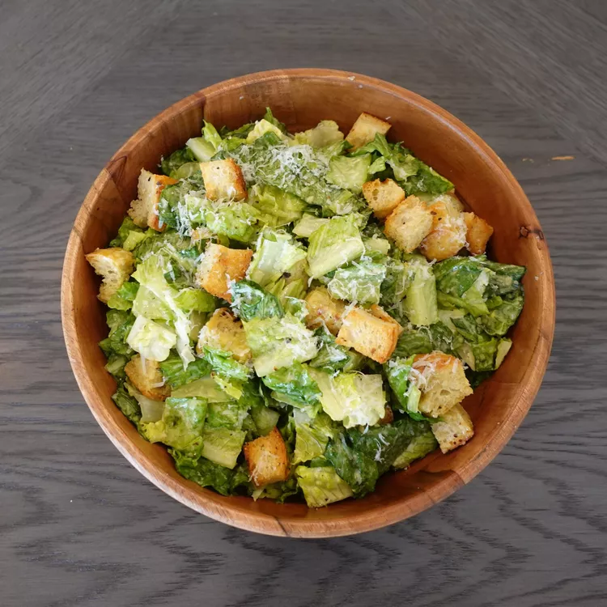

Home
Delicious Caesar Salad

Recipe Ingredients
2 anchovy fillets
2 cloves garlic, chopped, or to taste
1 cup mayonnaise
⅓ cup grated Parmesan cheese
¼ cup half-and-half
2 tablespoons fresh lemon juice
1 tablespoon Dijon mustard
2 teaspoons Worcestershire sauce
Step by Step Directions
Combine anchovy fillets with garlic in a food processor and pulse several times to form a paste.
Process mayonnaise, Parmesan cheese, half-and-half, lemon juice, Dijon mustard, and Worcestershire sauce with anchovy mixture until dressing is creamy.
Refrigerate for 1 hour or more before serving.